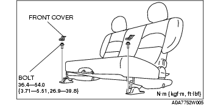
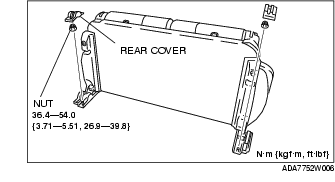

Rear seat removal/installation 1. Remove the front covers, then remove the bolts. 2. Fold the rear seat upward. 3. Remove the rear covers, then remove the nuts. 4. Lift up and remove the rear seat. 5. Install in the reverse order of removal.